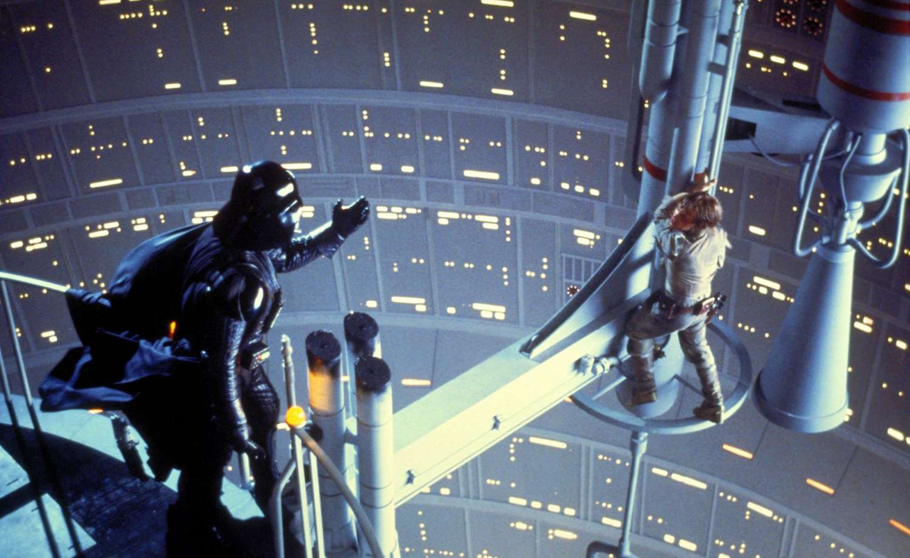

Nagroda Oscara (oficjalnie znana jako Academy Award of Merit) to jedna z najbardziej prestiżowych nagród filmowych na świecie. Przyznawana corocznie przez Amerykańską Akademię Sztuki i Wiedzy Filmowej (Academy of Motion Picture Arts and Sciences - AMPAS), nagroda ta honoruje wybitne osiągnięcia w różnych kategoriach, takich jak najlepszy film, najlepszy reżyser, najlepszy aktor, najlepsza aktorka oraz wiele innych. Pierwsze nagrody Oscarowe wręczono w 1929 roku podczas uroczystej ceremonii w Hollywood. Od tamtej pory wydarzenie to zyskało ogromną popularność i stało się ważnym punktem w kalendarzu przemysłu filmowego. Z biegiem lat ceremonia oscarowa przekształciła się w spektakularne wydarzenie telewizyjne, przyciągające miliony widzów na całym świecie.
Gwiezdne Wojny: Nowa Nadzieja (1977) Pierwsza część sagi „Gwiezdne Wojny” z 1977 roku, znana również jako „Nowa Nadzieja”, była prawdziwym przełomem w świecie kina. Po premierze zyskała ogromne uznanie zarówno krytyków, jak i widowni, a jej innowacyjne efekty specjalne oraz epicka opowieść o walce dobra ze złem przyciągnęły miliony fanów. Film stał się kultowy i zapoczątkował fenomen, który trwa do dziś, tworząc silną bazę fanów i wprowadzając nowe standardy w branży filmowej.
Gwiezdne Wojny: Imperium Kontratakuje (1980) Druga część trylogii, „Imperium Kontratakuje”, została wydana w 1980 roku i była szeroko uważana za jeden z najlepszych sequelów w historii kina. Film zyskał uznanie za mroczniejszy ton, głębszy rozwój postaci oraz zaskakujące zwroty akcji. Krytycy chwalili go za dojrzałość i złożoność narracji, a widownia z entuzjazmem przyjęła rozwój historii. „Imperium Kontratakuje” stał się klasykiem i nadal jest jednym z najbardziej cenionych filmów w całej sadze.
Gwiezdne Wojny: Powrót Jedi (1983) „Powrót Jedi” z 1983 roku zamknął oryginalną trylogię i również zdobył dużą popularność wśród widowni. Mimo że film był dobrze przyjęty, nie wszyscy krytycy byli tak entuzjastyczni jak w przypadku poprzednich części. Chociaż cieszył się dużym zainteresowaniem, niektórzy widzowie wskazywali na pewne niedociągnięcia fabularne i uproszczenie niektórych wątków. Mimo to film zakończył sagę z przytupem, pozostawiając wiele pozytywnych wspomnień.
Joker (2019) Film „Joker” w reżyserii Todda Phillipsa z 2019 roku wywołał wiele kontrowersji, ale także ogromne uznanie. Widzowie docenili intensywną grę aktorską Joaquina Phoenixa, który wcielił się w tytułową rolę. Krytycy chwalili film za jego psychologiczne podejście do postaci Jokera oraz za odważną narrację. „Joker” zdobył wiele nagród, w tym Oscara za najlepszą rolę pierwszoplanową, i stał się jednym z najważniejszych filmów swojego roku, wzbudzając intensywne dyskusje na temat zdrowia psychicznego i społeczeństwa.
Shrek (2001) Film „Shrek”, wydany w 2001 roku, został ciepło przyjęty przez widownię i krytyków, a jego sukces zaskoczył wielu. Jako animacja, „Shrek” przełamał konwencje tradycyjnych bajek, łącząc humor dla dorosłych z elementami familijnymi. Główny bohater, ogr imieniem Shrek, zyskał sympatię widzów dzięki swojej nieprzeciętnej osobowości i niechęci do stereotypów.